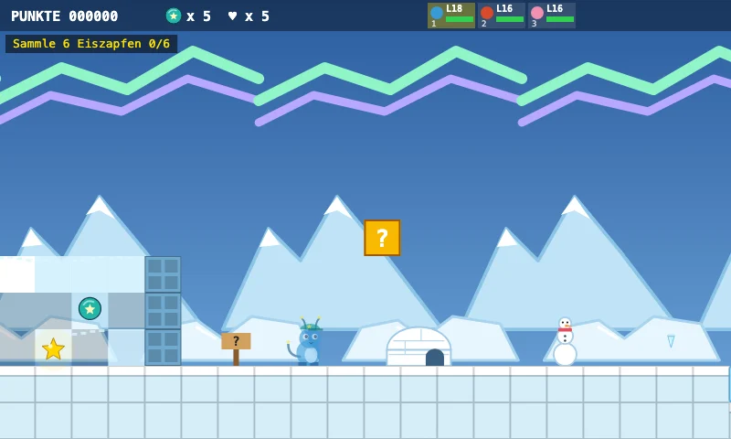
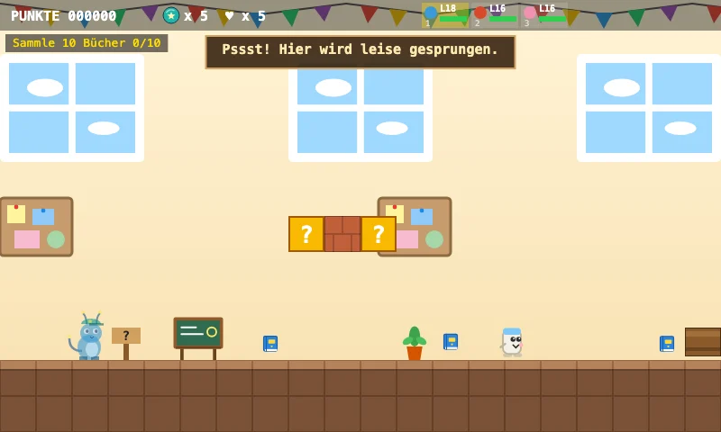
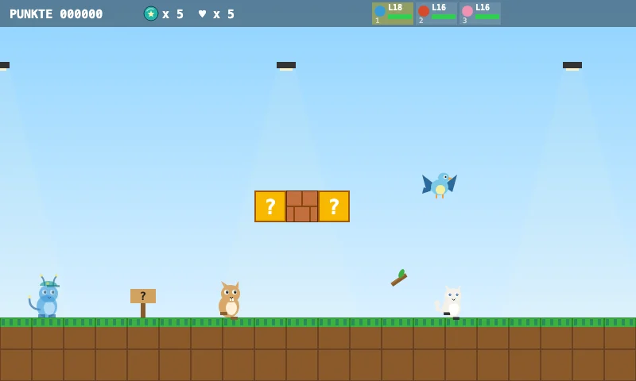

1-9 Mondo polare ghiacciato
Benvenuto nel mondo polare! Raccogli 6 ghiaccioli, poi la bandiera si apre.
Scopri il livelloAvventura Zappilon · 6 livelli
Esplora i mondi in pixel art di Zappilon. Ogni livello mostra cinque scene di gioco con percorsi, obiettivi, creature e sorprese.

Benvenuto nel mondo polare! Raccogli 6 ghiaccioli, poi la bandiera si apre.
Scopri il livello
Benvenuto al mare polare! Il ghiaccio scivola e i lastroni si rompono per un attimo. Raccogli cinque ghiaccioli: aprono l'igloo segreto!
Scopri il livello
Benvenuto alla Scuola Zappilon! Raccogli 10 libri e la sala insegnanti si aprirà.
Scopri il livello
Benvenuto nella grande città! Salta da tetto a tetto: i cuscini dei pompieri ti aiutano a risalire.
Scopri il livello
Le scimmie fanno una festa delle banane! Fai un giro sulle montagne russe di liane.
Scopri il livello
Benvenuto alla Scuola Zappi! Raccogli provette e matite nelle aule.
Scopri il livello